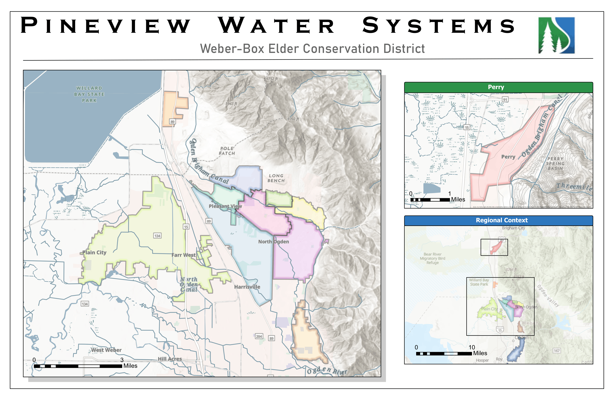
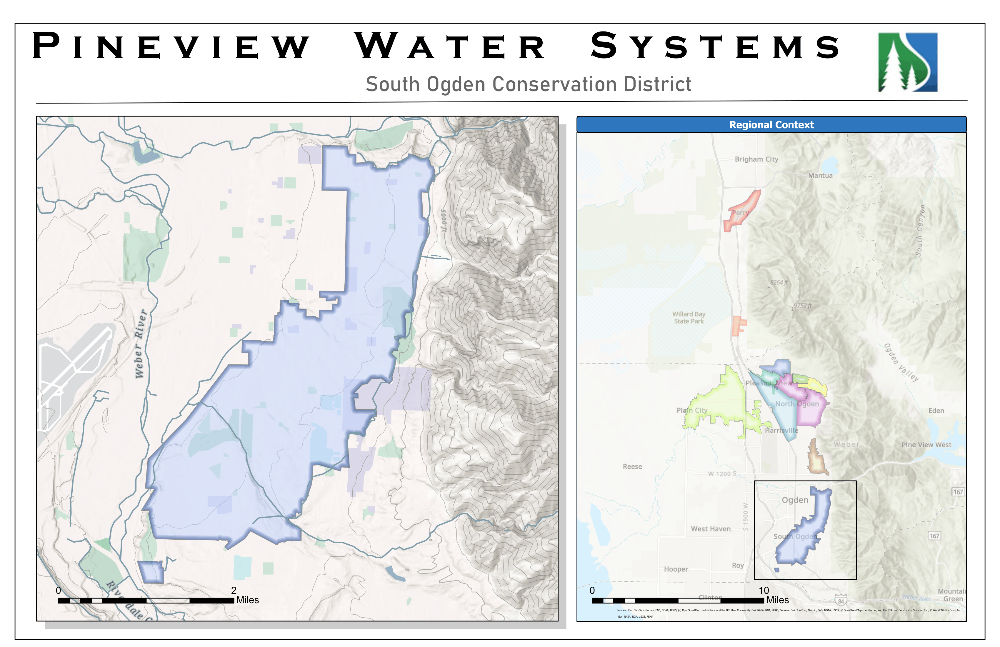

GIS Technician & Spatial Analyst
I build spatial workflows that connect real-world problems to real-world data across utility systems, wildlife habitat modeling, cartographic design, and field-based ecology.
Selected Work
Applied GIS and spatial analysis across ecology, conservation, production utility systems, cartographic communication, and workflow automation.
Modeled habitat suitability for Hogna carolinensis using GBIF occurrence data and WorldClim variables. Reclassified output into stratified sampling zones, then translated those zones into real transect designs accounting for terrain, access constraints, and field logistics.
Independent conservation analysis combining NDVI-derived vegetation structure, habitat suitability modeling, and landscape connectivity assessment. Evaluated fragmentation constraints against minimum viable population thresholds and used spatial ecology to critique reintroduction feasibility.
Managing GIS infrastructure for a live utility environment including parcel data, hosted feature layers, service area maps, and Cityworks-connected assets. The work centers on system integrity: preserving classifications, avoiding broken dependencies, and keeping AGOL workflows maintainable.

Cartography · Weber-Box ElderDesigned district-level map layouts for Weber-Box Elder and South Ogden Conservation Districts with readable boundaries, inset maps, and regional context. Focused on clean visual communication for real organizational use and embedded delivery via WordPress.

Cartography · South OgdenProduced a focused district map with local detail and regional context to show service extent clearly. Designed to be straightforward, readable, and presentation-ready for district stakeholders.
Built repeatable workflows for importing and processing spatial datasets from CSV, automatically detecting geometry type, batch processing multiple inputs, and outputting usable feature classes. Designed for repeatability and future QA expansion instead of one-off scripting.
Technical Profile
Tools and methods used in actual projects and workflows.
Background
Where the skills come from.